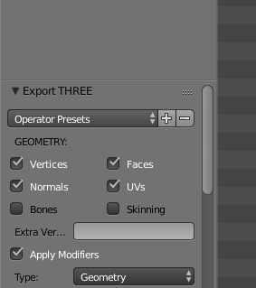
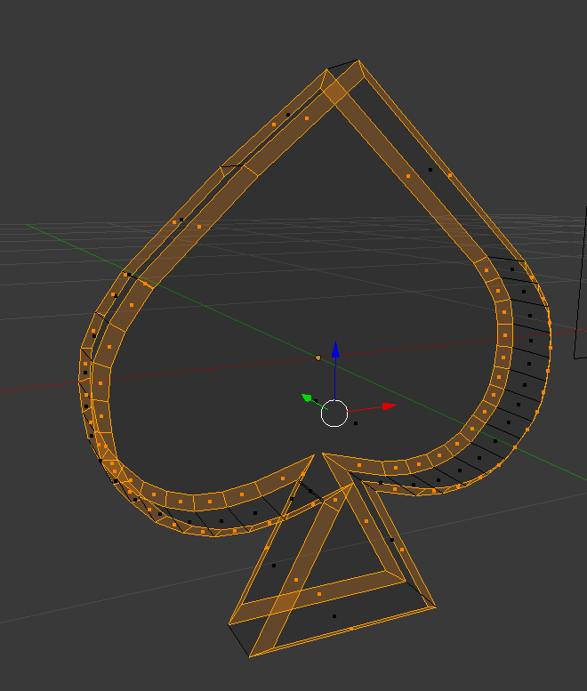
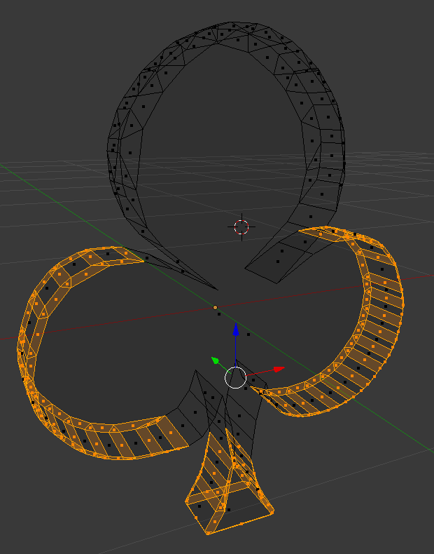
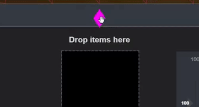

<md-dialog aria-label="Info">
    <form>
        <md-toolbar>
            <div class="md-toolbar-tools">
                <h2>General Information</h2>
                <span flex></span>
                <md-button class="md-icon-button" ng-click="cancel()">
                    <md-icon md-svg-src="images/icons/close.svg" aria-label="Close dialog"></md-icon>
                </md-button>
            </div>
        </md-toolbar>
        <md-dialog-content style="max-width:800px;max-height:810px; ">
            <md-tabs md-dynamic-height md-border-bottom md-selected="tabSelected">
                <md-tab label="About this page">
                    <md-content class="md-padding">
                        <h1 class="md-display-2">About this page</h1>
                        <p>This page is made with Threejs framework along with angular javascript framework and some additional plugins like: </p>
                        <ul>
                            <li><a href="https://material.angularjs.org/">Material design</a></li>
                            <li><a href="https://github.com/mrdoob/three.js/blob/master/examples/js/controls/OrbitControls.js">OrbitControls</a></li>
                            <li><a href="https://gist.github.com/kopiro/86aac4eb19ac29ae62c950ad2106a10e">DeviceOrientationControls</a></li>
                            <li><a href="https://jquery.com/">JQuery</a></li>
                            <li><a href="https://github.com/hammerjs/hammer.js/tree/master/">hammerjs</a></li>
                        </ul>
                        <p>Since the start of this page development I used some css3d components to give the page a feeling of immersion. 
                            One of my achievements was to create a transition from Threejs objects to css3d without the slightest loss of its attributes.</p>
                        <div layout="row" layout-align="center center" style="background-color: #2e2e2e;">
                            
                        </div>
                        <p>This cards symbols or (as they are represented inside code) items can be collected by clicking from inside the canvas with the mouse hover position or with the 
                            center of the screen when you are using a mobile device. Once you collect them the actual mesh gets transformed into an SVG pattern inside a css3d object and 
                            can be dragged around or inside another canvas for <a href="" ng-click="tabSelected = 1">customization</a>. 
                            Again, any of the things that this page does doesn’t have any real purpose but to demonstrate how good could be an integration between angularjs and Threejs.</p>
                        <p>And since we are talking about purpose, notably the initial purpose of this page was due the lack of compatibility between angularjs and Threejs frameworks 
                            shown by the community even duo angular factories and directives shows otherwise.</p>
                        <p>Later on, I encountered with many issues like deprecated libraries as for example material design 1.7 which has not been updated by developers lately since their focus had changed. 
                            This announcement let many collaborators angry and others even resigned form using it, but I worked my way around and tried compensating with one of our best friends 
                            JQuery and finally everything worked as expected.</p>
                        <p>This page counts with many javascripts files, but the ones that really stand out are:</p>
                        
                        <ul>
                            <li>sceneFactory.js: Is responsible for the creation of all the scenes and adding/cloning meshes and managing remotely every scene.</li>
                            <br>
                            <li>animationFactory.js: Allows the capability to add animations to one or more meshes that are automatically rendered by the scene factory, 
                                one way to identify this is by clicking the blue cube that’s in the main scene, this will trigger a function that 
                                <a href="" ng-click="stopTime()">stops</a> the 
                                <code>animationFactory</code> from been called inside of the renderer, but letting you still move since the scene is still been rendered. 
                                Also, by hovering an object it clears his animation array until you stop hovering it.</li>
                            <br>
                            <li>meshFactory.js: Stores all the settings for every mesh to be created and loads before hand all textures and external geometries from 
                                json files that are been used in this page.</li>
                        </ul>
                        <div layout="row" layout-align="center center" style="background-color: #2e2e2e;">
                            
                            
                            
                        </div>
                        
                        <p>The geometries mentioned in <code>meshFactory</code> description were made by me in Blender (I’m still a beginner), and exported in json format compatible with Threejs.</p>
                        <p>Throughout time I will be updating the content of this page, and working mao in order to make it more efficient even though I won’t get payed for it.</p>
                        <p>The first version(1.0) of this personal little project was finished in 2018/11/6 possibly at a pretty late hour since I don’t have time for this anymore.</p>

                    </md-content>
                </md-tab>
                <md-tab label="Customize a mesh">
                    <md-content class="md-padding">
                        <h1 class="md-display-2">Customize a mesh</h1>
                        <p>Once an item is collected you can drag it around as much as you like. 
                            The moment an item is dropped a function search near its coordinates if there is a canvas, if the condition is true this “mesh” is 
                            added to that canvas/scene.</p>
                        <div layout="row" layout-align="center center" style="background-color: #2e2e2e;">
                            
                        </div>
                        <p>The designated canvas for mesh customization is the one on the bottom of the page, it is also the smallest one. When you are finished 
                            changing its color, size and texture press <code>FINISH/SAVE</code> button to return it to its initial collection 
                            container (in the middle of the page) as an SVG element. </p>
                        <p>All settings applied to one mesh are permanent to that specific mesh, 
                            even if they are a clone of its respected type, the moment they enter the <code>customScene</code> they are assigned with a 
                            unique texture, which means that all mesh types share one instance of a texture and geometry between them until they are customized. 
                            This way the loading time is minimized and it’s much easier for Threejs to render.</p>
                        <p></p>
                    </md-content>
                </md-tab>
            </md-tabs>
        </md-dialog-content>
    
        <md-dialog-actions layout="row">
        <md-button href="https://github.com/CGJurado/three-ang" target="_blank" md-autofocus>
            GitHub
        </md-button>
        <span flex></span>
        <md-button ng-click="hide()" style="margin-right:20px;" >
            OK
        </md-button>
        </md-dialog-actions>
    </form>
</md-dialog>